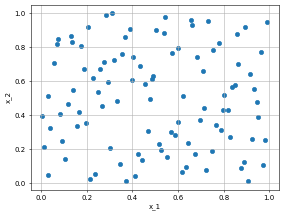
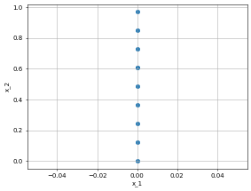
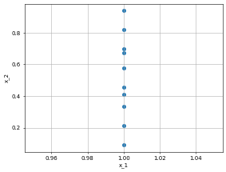
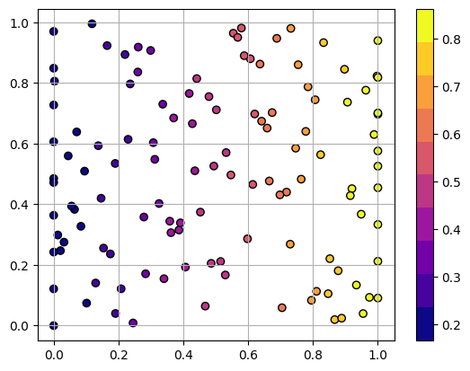

2D Laplace Equation#
# This is only valid when the package is not installed
import sys
sys.path.append('../../') # two folders up
import DeepINN as dp
import torch
import numpy as np
Using default backend: PyTorch
Using Pytorch: 2.0.1+cu117
Geometry#
# A simple 1D geometry
X = dp.spaces.R2('x')
Rect = dp.domains.Parallelogram(X, [0,0], [1,0], [0,1]) # unit square
left_bc = dp.constraint.DirichletBC(geom = Rect,
function = lambda X: X[:,0]*torch.tensor([0.0]), # this is a bug. We need to somehow involved X in the lambda otherwise it will give shape error.
sampling_strategy = "grid",
no_points = 10,
filter_fn = lambda x: x[:, 0] == 0.0)
right_bc = dp.constraint.DirichletBC(geom = Rect,
function = lambda X: X[:,0]*torch.tensor([1.0]), # this is a bug. We need to somehow involved X in the lambda otherwise it will give shape error.
sampling_strategy = "grid",
no_points = 10, # you can use more points. there are conditions to deal with stupid conditions.
filter_fn = lambda x: x[:, 0] == 1.0)
interior_points = dp.constraint.PDE(geom = Rect,
sampling_strategy= "LatinHypercube",
no_points = 100)
dp.utils.scatter(X, interior_points.sampler_object(), dpi = 50) # collocation points
dp.utils.scatter(X, left_bc.sampler_object(), dpi = 50)
dp.utils.scatter(X, right_bc.sampler_object(), dpi = 50)



PDE#
def laplace(X,y):
"""
2D Laplace equation.
u__x + u__y = 0
i is always zero because output to the NN is always 1D
"""
dy_x = dp.constraint.Jacobian(X, y)(i=0, j=0)
dy_xx = dp.constraint.Jacobian(X, dy_x)(i = 0, j = 0)
dy_y = dp.constraint.Jacobian(X, y)(i=0, j=1)
dy_yy = dp.constraint.Jacobian(X, dy_y)(i = 0, j = 1)
return dy_xx + dy_yy
domain = dp.domain.Generic(laplace,
interior_points,
[left_bc, right_bc])
Network#
activation = "tanh"
initialiser = "Xavier normal"
layer_size = [2] + [2] * 1 + [1]
net = dp.nn.FullyConnected(layer_size, activation, initialiser)
model = dp.Model(domain, net)
optimiser = "adam"
lr=0.001
metrics="MSE"
model.compile(optimiser, lr, metrics, device = "cuda")
Domain compiled
Network compiled
model.optimiser_function, model.lr, model.metric
(torch.optim.adam.Adam, 0.001, MSELoss())
model.train(iterations = 5000)
Iteration: 1 BC Loss: 2.1201 PDE Loss: 130.2115 Loss: 132.3316
Iteration: 501 BC Loss: 1.4108 PDE Loss: 5.5380 Loss: 6.9488
Iteration: 1001 BC Loss: 0.7701 PDE Loss: 0.2101 Loss: 0.9802
Iteration: 1501 BC Loss: 0.5292 PDE Loss: 0.0038 Loss: 0.5330
Iteration: 2001 BC Loss: 0.4286 PDE Loss: 0.0025 Loss: 0.4310
Iteration: 2501 BC Loss: 0.3487 PDE Loss: 0.0019 Loss: 0.3506
Iteration: 3001 BC Loss: 0.2640 PDE Loss: 0.0014 Loss: 0.2654
Iteration: 3501 BC Loss: 0.1792 PDE Loss: 0.0009 Loss: 0.1801
Iteration: 4001 BC Loss: 0.1062 PDE Loss: 0.0006 Loss: 0.1068
Iteration: 4501 BC Loss: 0.0540 PDE Loss: 0.0004 Loss: 0.0544
Iteration: 5001 BC Loss: 0.0232 PDE Loss: 0.0002 Loss: 0.0234
Training finished
Time taken: 'trainer' in 27.7988 secs
# model.iter = 1
# model.train(iterations = 2000)
model.network
FullyConnected(
(activation): Tanh()
(linears): ModuleList(
(0): Linear(in_features=2, out_features=2, bias=True)
(1): Linear(in_features=2, out_features=1, bias=True)
)
)
coordinates_list = dp.utils.tensor2numpy([model.collocation_point_sample, model.boundary_point_sample])
solution_list = dp.utils.tensor2numpy([model.collocation_forward, model.BC_forward])
history = model.training_history
import matplotlib.pyplot as plt
plt.figure(1)
plt.scatter(coordinates_list[0][:,0], coordinates_list[0][:,1], c=solution_list[0][:,0], label = "collocation points", cmap=plt.get_cmap('plasma', 10), edgecolors='k')
plt.scatter(coordinates_list[1][:,0], coordinates_list[1][:,1], c=solution_list[1], label = "boundary points", cmap=plt.get_cmap('plasma', 10),edgecolors='k')
plt.colorbar()
plt.grid('minor')

plt.figure(2)
plt.plot(history)
plt.xlabel("Iterations")
plt.ylabel("Loss")
Text(0, 0.5, 'Loss')